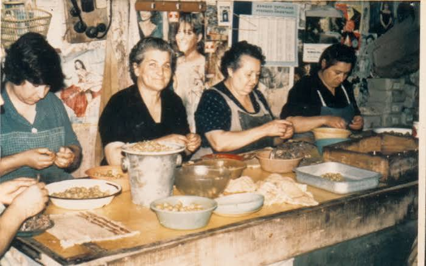

Anchois
de CollioureSalaison catalane, savoir-faire ancestral


⟹ Pêche et salaison catalane du Roussillon ⟸
À Collioure, l’histoire de l’anchois est inséparable de celle du port. Abritée au fond d’une petite baie de la Côte Vermeille, au pied du massif des Albères, la cité fut pendant des siècles un point d’échange entre le Roussillon, la Catalogne et les routes maritimes de la Méditerranée occidentale. Dès le Moyen Âge, la pêche et la conservation du poisson y occupent une place essentielle : avant le froid artificiel, le sel constitue en effet le moyen le plus sûr de conserver les prises et de les transporter loin du lieu de pêche. Sardines, thons et surtout anchois alimentent ainsi une activité de salaison qui devient progressivement l’une des signatures économiques de Collioure.
Le développement de cette activité repose sur une ressource stratégique : le sel. Sous l’Ancien Régime, son commerce et sa fiscalité sont étroitement contrôlés, ce qui donne une importance particulière aux privilèges accordés aux communautés maritimes. La tradition historique locale rappelle notamment les avantages fiscaux dont bénéficièrent les habitants de Collioure pour soutenir la pêche et la salaison. Grâce à cet accès au sel, les saleurs peuvent préparer le poisson dès son débarquement et constituer des productions suffisamment stables pour être commercialisées au-delà du littoral roussillonnais.

À l’époque moderne, l’anchois s’impose peu à peu parmi les poissons les plus recherchés. Sa petite taille, sa chair grasse et fragile et sa forte saisonnalité rendent indispensable une transformation rapide. Dès l’arrivée des bateaux, les poissons sont triés, salés, étêtés et éviscérés, puis rangés en couches régulières avec du sel dans des récipients où ils mûrissent lentement. Cette maturation n’est pas une simple conservation : sous l’action du sel et du temps, la chair se transforme, s’assouplit et développe les arômes puissants qui caractérisent l’anchois salé.
La pêche traditionnelle rythmait toute la vie du port. Les campagnes d’anchois mobilisaient marins, patrons de barques, ouvriers des quais, tonneliers, négociants et surtout une importante main-d’œuvre féminine dans les ateliers. Ces ouvrières, souvent désignées comme les « anchoïeuses », acquièrent une remarquable dextérité pour nettoyer, lever et disposer les filets sans abîmer une chair extrêmement délicate. Cette dimension manuelle est restée au cœur de la réputation du produit : aujourd’hui encore, le ministère de l’Agriculture souligne que la fragilité de l’anchois rend difficile une mécanisation complète et que les gestes de préparation demeurent largement artisanaux.
Aux XVIIIe et XIXe siècles, puis au début du XXe siècle, l’activité connaît une forte expansion. Les barques catalanes, reconnaissables à leur voile latine, sillonnent la côte. Les techniques de pêche évoluent ensuite avec l’emploi de filets plus efficaces et de la pêche nocturne à la lumière, destinée à concentrer les bancs de petits poissons. À son apogée, la filière fait vivre une part importante de la population colliourencque : les ateliers de salaison se multiplient dans la ville et les maisons de commerce expédient leurs préparations vers de nombreux marchés français.
L’anchois devient aussi un élément de l’identité culturelle de Collioure. Dans cette ville où se rencontrent monde maritime, vignoble en terrasses et culture catalane, les ateliers de salaison font partie du paysage au même titre que les barques, les quais et les caves de Banyuls et de Collioure. Le poisson apparaît dans la cuisine familiale, servi au sel ou à l’huile, intégré aux salades et aux préparations méditerranéennes. Sa présence dans les commerces et les conserveries contribue progressivement à associer le nom même de Collioure à celui de l’anchois.
Le XXe siècle bouleverse cependant cet équilibre. La motorisation des flottilles, l’évolution des techniques de pêche, la concurrence d’autres ports et surtout les fluctuations des bancs d’anchois modifient profondément l’approvisionnement. La pêche locale finit par disparaître, mais les maisons de salaison maintiennent leur activité en achetant des poissons répondant aux caractéristiques recherchées sur d’autres criées. Le cœur du savoir-faire se déplace ainsi de la capture vers la transformation : ce qui définit désormais l’anchois de Collioure est moins le lieu où le poisson a été pêché que la manière dont il est préparé et maturé dans la cité.
Cette continuité artisanale a conduit à une reconnaissance officielle. L’« Anchois de Collioure » bénéficie d’une Indication géographique protégée (IGP), dont le cahier des charges a été consolidé en 2004 et qui protège le lien entre le produit, la réputation de Collioure et les opérations traditionnelles de transformation. L’IGP distingue notamment différentes présentations historiques — anchois au sel, filets à l’huile ou préparations apparentées prévues par le cahier des charges — tout en encadrant les méthodes qui fondent leur typicité.
Ainsi, l’histoire de l’anchois de Collioure raconte une remarquable adaptation. La grande pêche qui animait autrefois la baie n’est plus celle des siècles passés, mais les gestes des saleurs et des anchoïeuses ont survécu. Dans les ateliers encore associés à cette tradition, le travail manuel, la maturation lente et l’attention portée à chaque poisson prolongent une économie maritime ancienne devenue patrimoine gastronomique. L’anchois reste aujourd’hui l’un des symboles les plus immédiatement reconnaissables de Collioure et de la Côte Vermeille.
L'anchois de Collioure ne se fabrique pas : il se façonne à la main, poisson après poisson, comme au temps des premiers saleurs.
— Tradition catalane, transmise de génération en générationCollioure n'est pas seulement un village de saleurs : ses ruelles catalanes, son clocher planté dans la mer et sa lumière si particulière ont aussi séduit les peintres fauves au début du XXe siècle. La cité vit toujours au rythme de la mer, entre pêche, salaison et tourisme.
Chaque année, une fête de l'anchois rassemble producteurs et visiteurs autour de dégustations et d'animations, tandis que des régates de barques catalanes rappellent le lien indéfectible entre le village et sa tradition maritime.
Château royal de Collioure forteresse dominant le port, témoin de l'histoire militaire de la Côte Vermeille depuis l'époque des rois de Majorque.
Port-Vendres à quelques kilomètres, ce port de pêche voisin conserve lui aussi une activité maritime active et un front de mer animé.
Banyuls-sur-Mer ses vignobles en terrasses accrochés aux pentes produisent le célèbre vin doux naturel AOP Banyuls.
Cap Béar à pied depuis le sentier du littoral, ce promontoire offre l'un des plus beaux panoramas de la Côte Vermeille.